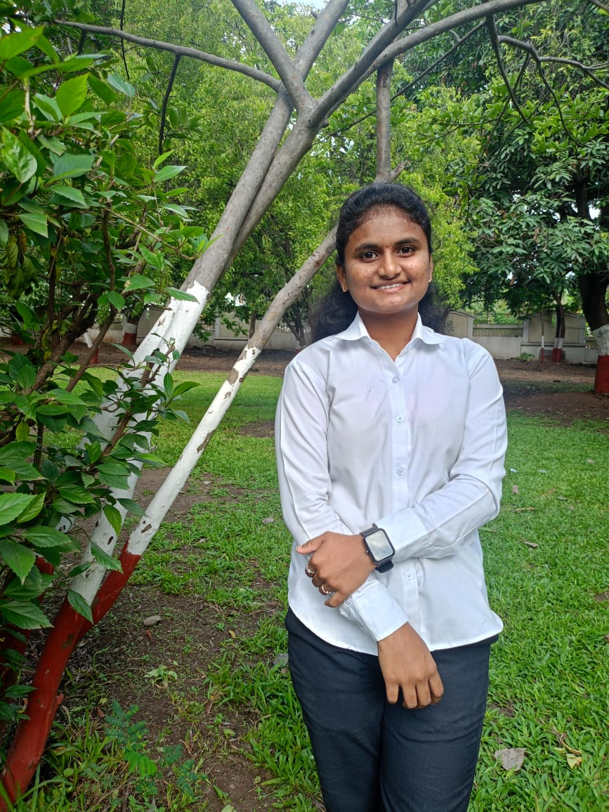
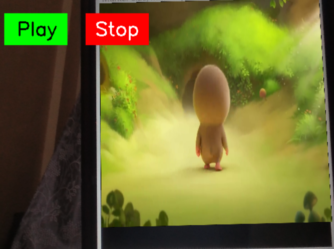

Sakshi Datir
Diploma Student
AI & Robotics Enthusiast
About Me
Hello! I’m Sakshi Datir, a passionate third-year diploma student in Information Technology at Amrutvahini Polytechnic, Sangamner.
I specialize in robotics, real-time AI, embedded systems, and automation using OpenCV, Arduino, and Python. From creating smart GUI apps to servo-based robotics, I love exploring how technology can solve real-world problems.
As a quick learner and problem solver, I enjoy teamwork, exploring new innovations, and am fluent in Marathi, Hindi, and English. My dream is to build intelligent systems that simplify human lives.
Education
2023 – SSC
Dnyanganga Vidyaniketan, Sangamner,Ahilyanagar,Maharashtra
91.40%
91.40%
2023–2024
Completed Diploma 2nd Year in Information Technology at Amrutvahini Polytechnic, Sangamner
2024–2025
Currently pursuing Diploma 3rd Year in Information Technology
Skills
- C, C++, Java, Python
- OpenCV, MediaPipe, Real-time AI
- Arduino, Sensors, Servo Control
- GUI Development: Tkinter, PyQt5
- Web Dev: HTML
- 3D Design: Fusion 360
Projects
- ArUco Marker Generator
Created visual markers using OpenCV for tracking and inventory.

- Floating Video with Subtitle via ArUco Marker
Displays floating videos aligned with ArUco markers and auto-subtitles using OpenCV.
 - Object Detection GUI GUI to detect objects and calculate area in real-time webcam feed.
- Spider Robot Built a six-legged walking robot using Arduino and servo motors.
- Smart Surveillance Car Live video feed surveillance car using Raspberry Pi and Wi-Fi control.
- Bionic Hand using OpenCV & Arduino Real-time hand gesture-controlled robotic hand using webcam and servo motors.
- Inventory Management System Web-based inventory system using Python Django with barcode/ArUco-based product entry.